import numpy as np
import matplotlib.pyplot as plt
from numpy.polynomial.polynomial import Polynomial
from numpy.polynomial.hermite_e import HermiteE
from scipy.special import factorial
from scipy.stats import poisson, norm, gammaBackground
Previously, we have worked out a deterministic model of the sequencing depth required to detect a novel pandemic virus by the time it reaches a fixed cumulative incidence (number of people ever infected). However, in the real world, there are a number of sources of noise that will affect our ability to detect a virus. In this post, we ask the question: For a given level of sequencing, what is the cumulative incidence by which we have an x% chance of detecting a virus? We can use this result to modify our deterministic estimates of the level of sequencing required to detect by a given cumulative incidence.
Model
It is useful to categorize noise sources by how they behave as various parameters like the sequencing depth change. For example, three types of noise that are relevant to our problem are:
- Noise whose coefficient of variation decreases as the sequencing depth increases. This includes poisson counting noise in the number of reads mapping to a sequence, due to finite sampling effects. Variation in the number of reads per sample likely takes this form as well.
- Noise whose coefficient of variation goes to a constant value as the sequencing depth increases. For example, random variation in the efficiency of the target will contribute this type of noise. Also, the relative abundances in a sequencing library depend on biases in enrichment efficiency. If there is a class of abundant sequences that are efficiently enriched by our lab protocol, random variation in the abundance of that class of sequences will generate noise in the counts of all the other sequences that is only weakly dependent on the total read depth.
- Noise that depends on the number of people contributing to a sample. For example, in the limit where each sample is taken from a single person, the noise in the counts of reads mapping to the pandemic virus will be dominated by whether that single person is infected or not.
In the following, we consider noise classes 1 and 2. We neglect 3 for the moment because in well-mixed municipal wastewater samples, we expect this to be a small effect. However, similar analysis to that presented here could be applied in that case as well. (Update: see Appendix for update with a treatment of 3).
We will consider a sequence of samples indexed by \(i\), where the random variable \(Y_i\) represents the number of reads corresponding to the pandemic virus in sample \(i\). We model \(Y_i\) as independent draws from a Poisson mixture distribution: \[ Y_i \sim \text{Poisson}(X_i), \] where \(X_i\) is a latent variable that represents excess noise not accounted for by the Poisson model. To connect this model to our previous deterministic model, we set the mean of \(X_i\) to the number of reads in the deterministic model:
\[ E[X_i] = \mu_i = \frac{n b}{N} e^{r(t_0 + i \delta t)} \]
where:
- \(n\) is the sequencing depth
- \(b\) is the P2RA factor
- \(N\) is the population size
- \(r\) is the growth rate of the virus
- \(t_0\) is the time of the first sample after the start of the pandemic
- \(\delta t\) is the time between samples.
Note that for simplicity this is assuming instantaneous grab sampling, which is a good approximation to 24-hr composite sampling.
Recall that in our detection model, we declare a virus to be detected when the cumulative number of reads matching the virus cross a threshold. Thus, to calculate the probability of detection, we need to calculate the probability that the cumulative number of reads (\(\sum_{j=0}^{i} Y_j\)) is greater than the threshold value \(\hat{K}\). We will proceed in two steps:
- Calculate the cumulant generating function (CGF) of the random variable \(Y = \sum_j Y_j\). It is convenient to work with the CGF because the CGF of a sum of independent random variables is the sum of their individual CGFs.
- Approximate the cumulative distribution function (CDF) of \(Y\) from a finite set of cumulants using the Cornish-Fisher expansion. In this notebook, we will explore under what conditions we can truncate the Cornish-Fisher expansion at a certain number of terms.
Cumulant generating function of the cumulative read count, \(Y\)
The cumulant generating function \(K_Y\) of random variable \(Y\) is given by the log of its moment generating function:
\[ K_Y(z) = \log \mathbb{E}[e^{zY}]. \]
If \(Y_i\) is Poisson distributed with random mean \(X_i\),
\[ \begin{align} K_{Y_i}(z) & = \log \mathbb{E}\left[\mathbb{E}[e^{zY_{i}} | X_i]\right] \\ & = \log \mathbb{E}\left[\exp \left\{ X_i (e^{z} - 1) \right\} \right] \\ & = K_{X_i} \left(e^{z} - 1\right), \end{align} \] where the second line uses the moment-generating fuction of a Poisson random variable, and \(K_{X_i}\) is the CGF of \(X_i\).
If we assume that the \(Y_i\) are independent of one another, then we can add their CGFs to get the CGF of the cumulative read count: \[ \begin{align} K_Y(z) & = K_{\sum_i Y_i}(z) \\ & = \sum_i K_{Y_i}(z) \\ & = \sum_i K_{X_i}(e^z - 1) \\ & = K_{X}(e^z - 1), \end{align} \] where we define \(X \equiv \sum_i X_i\).
The last equation tells us how to combine the cumulants of \(X\) to get the cumulants of \(Y\). Let the cumulants of \(Y\) be denoted \(\kappa_1, \kappa_2, \ldots\) and the cumulants of \(X\) by \(\chi_1, \chi_2, \ldots\). Expanding the CGF gives: \[ \begin{align} K_Y(z) & = K_X(e^z - 1) \\ & = \chi_1 (e^z - 1) + \chi_2 \frac{{(e^z-1)}^2}{2} + \chi_3 \frac{{(e^z-1)}^3}{3!} + \cdots \\ & = \chi_1 \sum_{j=1}^{\infty} \frac{z^j}{j!} + \chi_2 \frac{{\left(\sum_{j=1}^{\infty} \frac{z^j}{j!}\right)}^2}{2} + \chi_3 \frac{{\left(\sum_{j=1}^{\infty} \frac{z^j}{j!}\right)}^3}{3!} + \cdots \\ \end{align} \] Then, by equating powers of \(z\), we find \[ \begin{align} \kappa_1 & = \chi_1 \\ \kappa_2 & = \chi_1 + \chi_2 \\ \kappa_3 & = \chi_1 + 3 \chi_2 + \chi_3 \\ \kappa_4 & = \chi_1 + 7 \chi_2 + 6 \chi_3 + \chi_4 \\ & \cdots \end{align} \] This cumulant series has the intuitive property that if \(X \to \lambda\) constant, \(\chi_\alpha \to \lambda \delta_{\alpha, 1}\) and \(\kappa_\alpha \to \chi_1\). That is, \(Y \to \text{Poisson}(\lambda)\). For random \(X\), in constrast, all of the cumulants of \(Y\) are increased from their Poisson value of \(\chi_1\) by the cumulants of \(X\). In particular, the variance of \(Y\), \(\kappa_2\) is equal to the Poisson variance \(\chi_1\) plus the variance of \(X\), \(\chi_2\).
Cumulants of the latent variable \(X\)
It remains to find the cumulants of \(X\), \(\chi_\alpha\). For this, we need to specify a distribution for the latent variables at each sample, \(X_i\). For simplicity, we will choose the Gamma distribution, which allows us to vary the mean and coefficient of variation independently. We will parameterize the distribution by its mean \(\mu\), and inverse dispersion \(\phi\). In standard shape-scale parameterization, we have: \[ X_i \sim \text{Gamma}(\phi, \mu_i / \phi) \] where we assume that the inverse dispersion is constant in time. Note that the coefficient of variation of \(X_i\) is \(\phi^{-1/2}\), independent of \(\mu_i\). Thus our latent gamma model accounts for noise type 2 above.
The gamma distribution has CGF: \[ \begin{align} K_{X_i}(z) & = - \phi \log(1 - \frac{\mu_i}{\phi} z) \\ & = \phi \sum_{\alpha=1}^{\infty} \frac{1}{\alpha} {\left(\frac{\mu_i}{\phi}z\right)}^{\alpha} \end{align} \]
By the summation property of CGFs, we have the CGF of \(X = \sum_j X_j\) at time \(t_i\): \[ \begin{align} K_{X}(z) & = \sum_{j=0}^i K_{X_j}(z) \\ & = \phi \sum_{j=0}^i \sum_{\alpha=1}^{\infty} \frac{1}{\alpha} {\left(\frac{\mu_i}{\phi}z\right)}^{\alpha} \\ & = \sum_{\alpha=1}^{\infty} \frac{\phi^{1-\alpha}}{\alpha} \left( \sum_{j=0}^{i} \mu_j^\alpha \right) z^\alpha. \end{align} \] Because the prevalence is growing exponentially in our model, \(\mu_j\) is growing exponentially (see above). Letting \(A \equiv \frac{nb}{N} e^{rt_0}\), we have \(\mu_j = A e^{rj\delta t}\) and thus
\[ \begin{align} K_X(z) & = \sum_{\alpha=1}^{\infty} \frac{\phi^{1-\alpha}}{\alpha} \left(\sum_{j=0}^{i} A^\alpha e^{\alpha r j \delta t} \right) z^\alpha \\ & = \sum_{\alpha=1}^{\infty} \frac{\phi^{1-\alpha}}{\alpha} A^\alpha \left(\frac{e^{\alpha r (i+1) \delta t} - 1}{e^{\alpha r \delta t} - 1} \right) z^\alpha \\ & \approx \sum_{\alpha=1}^{\infty} \frac{\phi^{1-\alpha}}{\alpha^2 r \delta t} {\left(A e^{r i \delta t}\right)}^\alpha \left(\frac{\alpha r \delta t e^{\alpha r \delta t}}{e^{\alpha r \delta t} - 1} \right) z^\alpha \\ & \approx \sum_{\alpha=1}^{\infty} \frac{\phi^{1-\alpha}}{\alpha^2 r \delta t} {\left(A e^{r i \delta t}\right)}^\alpha z^\alpha \end{align} \] Where the first approximation requires the prevalence to be large compared to one, and the second approximation requires \(\alpha r \delta t \ll 1\). (TODO: generalize the second approximation.)
It is illuminating to parameterize the distribution of \(X\) by its mean, \(\mu\), and a shape parameter \(\nu\): \[ \begin{align} \mu & \equiv K_X'(0) \\ & = \frac{A e^{r i \delta t}}{r \delta t}. \\ \nu & \equiv \frac{\phi}{r \delta t}. \end{align} \] Substituting these into the equation above gives \[ K_X(z) = \nu \sum_{\alpha=1}^{\infty} \frac{1}{\alpha^2} {\left(\frac{\mu}{\nu}\right)}^\alpha z^\alpha. \] (Note that this is similar to the CGF of the gamma distribution but with the logarithm replaced by a dilogarithm.)
Finally, examination of the CGF yields the cumulants of \(X\): \[ \chi_\alpha = \frac{(\alpha - 1)!}{\alpha} \nu {\left(\frac{\mu}{\nu}\right)}^{\alpha}. \]
We can say a few things about this result:
- By construction, the mean of \(X\), \(\mu\), is our previous deterministic prediction for the counts. (In the small \(r \delta t\) limit).
- The shape parameter \(\nu\) controls the dispersion of \(X\). \(\text{Var}[X] = \chi_2 = \frac{\mu^2}{2\nu}\). That is: larger \(\nu\) means a smaller coefficient of variation.
- \(\nu\) is controled by the latent inverse dispersion \(\phi\) and the scaled sampling interval \(r \delta t\). Smaller sampling inverval means we take more independent samples per unit time, which reduces the variance of the sum.
- \(\frac{\mu}{\nu}\) is a pure scale parameter of the distribution of \(X\).
Cumulants of the cumulative counts \(Y\)
Substituting our equation for the cumulants of \(X\) \(\chi_\alpha\) into the equation for the cumulants of \(Y\) above gives \[ \begin{align} \kappa_1 & = \mu \\ \kappa_2 & = \mu + \frac{1}{2} \frac{\mu^2}{\nu} \\ \kappa_3 & = \mu + \frac{3}{2} \frac{\mu^2}{\nu} + \frac{2}{3} \frac{\mu^3}{\nu^2} \\ \kappa_4 & = \mu + \frac{7}{2} \frac{\mu^2}{\nu} + 4 \frac{\mu^3}{\nu^2} + \frac{3}{2} \frac{\mu^4}{\nu^3}. \\ \end{align} \]
We have two regimes, controled by the parameter \(\mu / \nu\):
- If \(\frac{\mu}{\nu} \ll 1\), the Poisson noise dominates and \(\kappa_\alpha \approx \mu\).
- If \(\frac{\mu}{\nu} \gg 1\), the latent noise dominates and \(\kappa_\alpha \approx \chi_\alpha\).
For higher cumulants, the separation between the regimes becomes less clean (i.e. it takes a smaller or larger \(\mu/\nu\) for one term to dominate.)
In terms of model parameters:
- More frequent samples (smaller \(\delta t\), thus larger \(\nu\)) pushes us toward the Poisson-dominant regime.
- More variable latent abundances (smaller \(\phi\), thus smaller \(\nu\)) pushes us toward the latent-dominant regime.
- A higher threshold of detection (larger \(\mu\) at the time of detection) pushes us toward the latent-dominant regime.
The Cornish-Fisher expansion of the quantiles of \(Y\)
Ultimately, our goal is to estimate the probability that \(Y > \hat{K}\), the detection threshold. Thus, we need to estimate the CDF of \(Y\) from its cumulants \(\kappa_\alpha\). For that we will use the Cornish-Fisher expansion. The idea behind the expansion is to start by approximating the CDF as that of a Gaussian random variable with the correct mean and variance, and then iteratively adjust it for higher-order cumulants (skew, kurtosis, etc). It is defined as follows:
The quantile function \(y(p)\) (i.e. the value for which \(\text{CDF}(y) = p\)) is approximated by \(y(p) \approx \kappa_1 + {\kappa_2}^{1/2} w_p\), where \[ \begin{align} w_p & = x \\ & + \gamma_1 h_1(x) \\ & + \gamma_2 h_2(x) + {\gamma_1}^2 h_{11}(x) \\ & + \cdots \\ x & = \Phi^{-1}(p) \\ \gamma_{\alpha-2} & = \frac{\kappa_\alpha}{{\kappa_2}^{\alpha/2}} \\ h_1(x) & = \frac{\text{He}_2(x)}{6} \\ h_2(x) & = \frac{\text{He}_3(x)}{24} \\ h_{11}(x) & = - \frac{2\text{He}_3(x) + \text{He}_1(x)}{36} \\ \end{align} \] Where \(\Phi\) is the CGF of the standard normal distribution and \(\text{He}\) are the probabilists’ Hermite polynomials. Note that each line of the sum must be included as a whole for the approximation to be valid at that level.
Validity of the expansion
For fixed \(x\) (and therefore fixed quantile), the relative sizes of the terms of the expansion are controlled by the coefficients \(\gamma\). In the Poisson-dominated regime: \[ \begin{align} \gamma_1 & = \mu^{-1/2} \\ \gamma_2 & = \gamma_1^2 = \mu^{-1} \\ \end{align} \] so truncating the expansion at a few terms should work well when \(\mu > 1\). Since we’re interested in having a significant probability of detection (e.g. >90%), and our threshold of detection is at least one read, this is not a very limiting requirement.
In the latent-noise-dominated regime: \[ \begin{align} \gamma_1 & = \frac{2^{5/2}}{3} \nu^{-1/2} \\ \gamma_2 & = 6 \nu^{-1} \end{align} \] so truncating the series at a few terms should work well when \(\nu > 1\). This is also not very limiting, because \(\nu\) can be large either by making \(\phi\) large (which is likely unless our data source is extremely noisy) or by sampling frequently so that \(r \delta t\) is small.
Putting these together, we can see that for our purposes, the expansion will be good when \(\nu > 1\). We’re concerned with the value of \(\mu\) when a particular quantile (e.g. 5%) passes the detection threshold \(\hat{K}\) The detection threshold by definition must be at least one read. Therefore, at detection, \(\mu > 1\). If \(\mu < \nu\), the Poisson noise dominates we can use \(\mu > 1\) to establish the validity of the CF expansion. If \(\mu > \nu\), the latent noise dominates and we can use \(\nu > 1\) for validity.
Numerical calculations
def cgf_x_series(mu: float, nu: float, order: int = 4) -> Polynomial:
coeffs = np.zeros(order + 1)
# No zeroth coefficient
k = np.arange(1, order + 1)
coeffs[1:] = nu * (mu / nu) ** k / k**2
return Polynomial(coeffs)
def expm1_series(order: int = 4) -> Polynomial:
k = np.arange(order + 1)
return Polynomial(1.0 / factorial(k)) - 1
def cgf_y_series(mu: float, nu: float, order: int = 4):
return cgf_x_series(mu, nu, order)(expm1_series(order)).cutdeg(order)
def cumulant_from_cgf(cgf: Polynomial, order: int) -> float:
return cgf.deriv(order)(0)Spot-check cumulants:
mu = 2.0
nu = 10.0
cgf = cgf_x_series(mu, nu)(expm1_series()).cutdeg(4)
coeffs = [0, 1, (1, 1 / 2), (1, 3 / 2, 2 / 3), (1, 7 / 2, 4, 3 / 2)]
predicted_cumulants = [mu * Polynomial(c)(mu / nu) for c in coeffs]
for k in range(5):
print(cumulant_from_cgf(cgf, k), predicted_cumulants[k])0.0 0.0
2.0 2.0
2.2 2.2
2.6533333333333333 2.6533333333333333
3.7439999999999998 3.744Check variance:
nu = 10.0
mu = np.arange(1, 100)
k2 = [cumulant_from_cgf(cgf_y_series(m, nu), 2) for m in mu]
plt.plot(mu, k2, label="exact")
plt.plot(mu, (1 / 2) * mu**2 / nu, "--", label="latent approximation")
plt.xlabel(r"$\mu$")
plt.ylabel(r"Variance of $Y$")
plt.legend()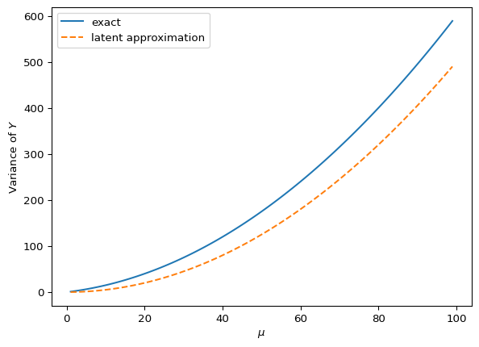
Note that the variance is growing quadratically, but the Poisson contribution to the variance is not totally negligible even for large \(\nu\).
Checking the Cornish-Fisher expansion against common distributions
In this section, we compare the Cornish-Fisher expansion of the quantile function to the exact quantile function for several known distributions to get a sense of its accuracy at different orders.
def cornish_fisher(*cumulants):
# cumulants = (k_1, k_2, ...)
order = len(cumulants)
if order < 2:
raise ValueError("Order of approximation must be >= 2")
if order > 4:
raise ValueError("Order of approximation must be <= 4")
sigma = np.sqrt(cumulants[1])
poly = HermiteE((0, 1))
if order >= 3:
gamma_1 = cumulants[2] / sigma**3
h_1 = HermiteE((0, 0, 1)) / 6
poly += gamma_1 * h_1
if order >= 4:
gamma_2 = cumulants[3] / sigma**4
h_2 = HermiteE((0, 0, 0, 1)) / 24
h_11 = -HermiteE((0, 1, 0, 2)) / 36
poly += gamma_2 * h_2 + gamma_1**2 * h_11
return cumulants[0] + sigma * polyCheck against Poisson distribution:
order = 4
p = np.arange(0.01, 1.0, 0.01)
x = norm.ppf(p)
for lamb in [1, 2, 4, 8]:
poisson_cumulants = [lamb] * order
for o in range(2, order + 1):
cf_poisson = cornish_fisher(*poisson_cumulants[:o])
plt.plot(p, cf_poisson(x), label=o)
plt.plot(p, poisson(lamb).ppf(p), color="k", linestyle="--", label="exact")
plt.legend(title="order")
plt.xlabel("quantile")
plt.ylabel("value")
plt.title(f"$\lambda$ = {lamb}")
plt.show()<>:14: SyntaxWarning: invalid escape sequence '\l'
<>:14: SyntaxWarning: invalid escape sequence '\l'
/var/folders/dv/_dgh3jnn7kn32ndcd117mg5m0000gn/T/ipykernel_8544/3927045381.py:14: SyntaxWarning: invalid escape sequence '\l'
plt.title(f"$\lambda$ = {lamb}")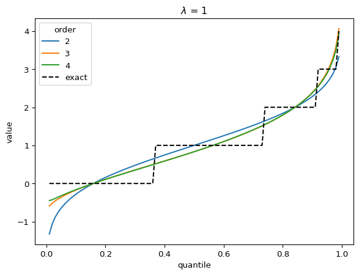
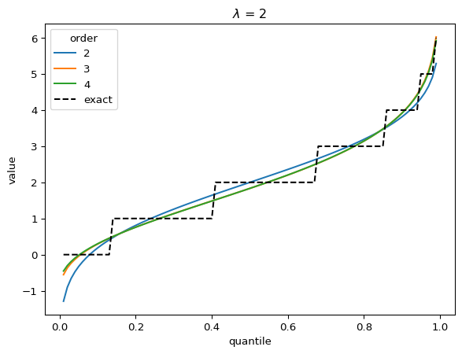
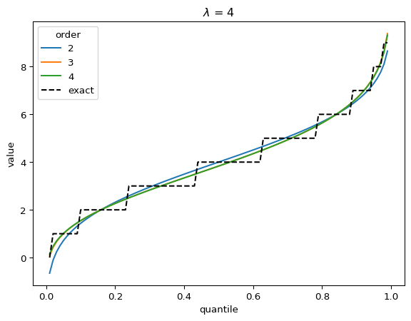
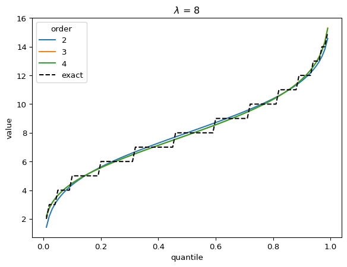
In the Poisson case, when \(\lambda > 1\), the distribution converges quickly to a Gaussian, and the higher-order corrections don’t matter.
Check against Gamma distribution:
scale = 1
k = np.arange(1, order + 1)
for shape in [1 / 2, 1, 2, 4, 8]:
gamma_cumulants = factorial(k - 1) * shape * scale**k
for o in range(2, order + 1):
cf_gamma = cornish_fisher(*gamma_cumulants[:o])
plt.plot(p, cf_gamma(x), label=o)
plt.plot(
p, gamma(shape, scale=scale).ppf(p), color="k", linestyle="--", label="exact"
)
plt.legend(title="order")
plt.xlabel("quantile")
plt.ylabel("value")
plt.title(f"shape = {shape}")
plt.show()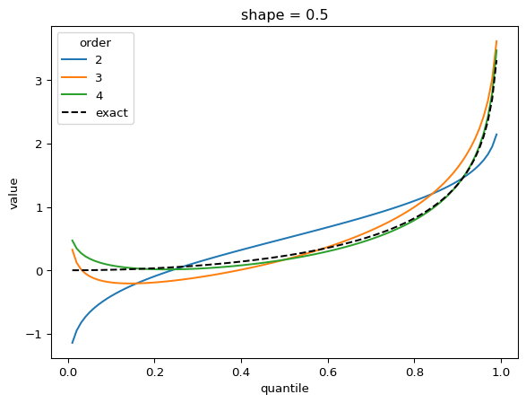
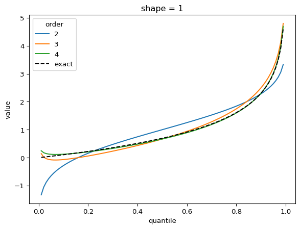
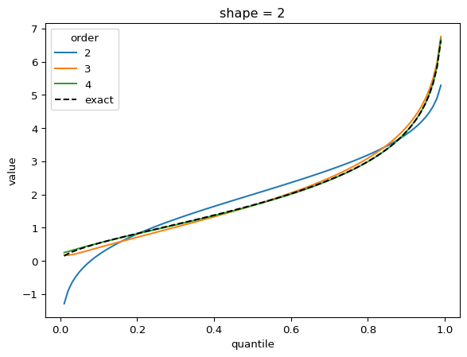
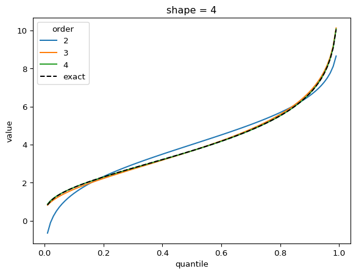
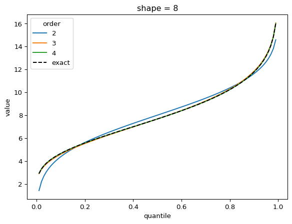
The shape parameter controls deviations from Gaussian and the error of the higher order approximations. For shape > 1, three terms gets you close and 4 gets you very close. For shape = 1/2, the Gaussian approximation is quite bad, but the order-4 Cornish fisher approximation is decent except for small quantiles. (It does not capture the power-law left tail of the distribution.)
Cornish-Fisher expansions for the cumulative count distribution
For the cumulative count distribution, there are two parameters, \(\mu\) (the mean) and \(\nu\) (which determines the shape).
For small \(\nu\), the noise is quickly dominated by the latent variable so the distribution goes to a constant shape, scaled by \(\mu\).
Even with \(\nu = 2\), the CF expansion converges quickly. 3 terms is quite good, 4 is indistinguisable from higher:
order = 6
nu = 2.0
for mu in [1, 2, 4, 8, 32]:
cgf = cgf_y_series(mu, nu)
cumulants = [cumulant_from_cgf(cgf, k) for k in [1, 2, 3, 4]]
for o in range(2, order + 1):
cf = cornish_fisher(*cumulants[:o])
plt.plot(p, cf(x), label=o)
plt.legend(title="order")
plt.xlabel("quantile")
plt.ylabel("value")
plt.title(r"$\nu$" f" = {nu}, " r"$\mu$ = " f"{mu}")
plt.show()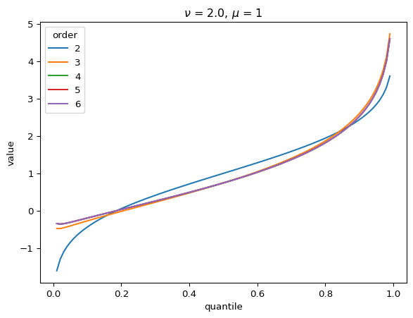
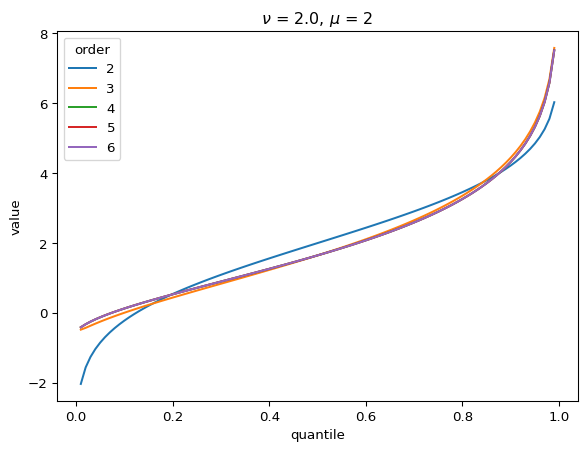
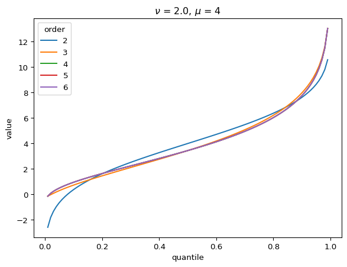
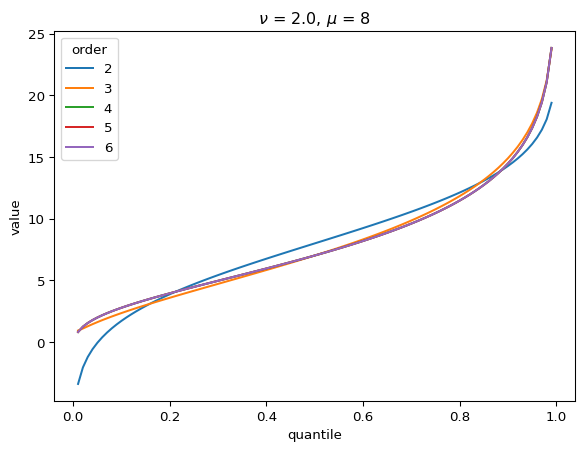
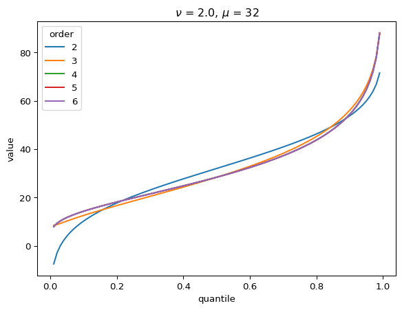
With larger \(\nu\), the shape of the distribution is closer to Gaussian:
order = 6
nu = 10.0
for mu in [1, 10, 100, 1000]:
cgf = cgf_y_series(mu, nu)
cumulants = [cumulant_from_cgf(cgf, k) for k in [1, 2, 3, 4]]
for o in range(2, order + 1):
cf = cornish_fisher(*cumulants[:o])
plt.plot(p, cf(x), label=o)
plt.title(r"$\nu$" f" = {nu}, " r"$\mu$ = " f"{mu}")
plt.xlabel("quantile")
plt.ylabel("value")
plt.show()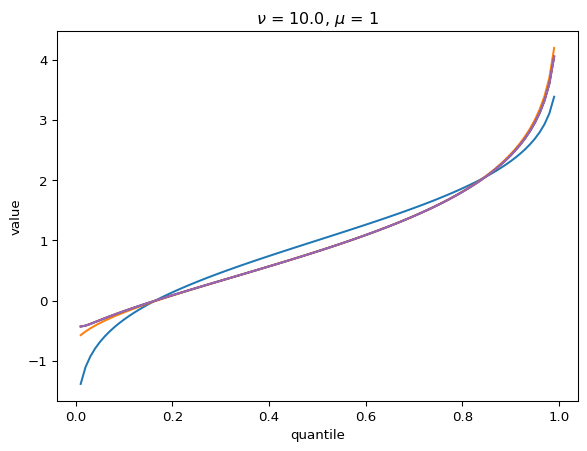
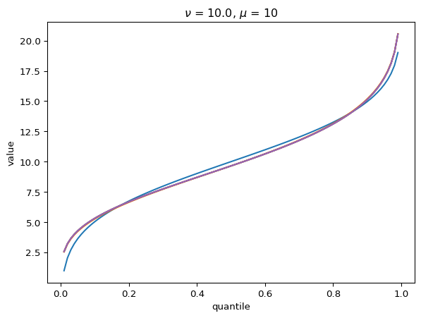
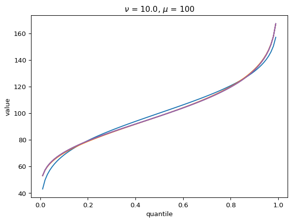
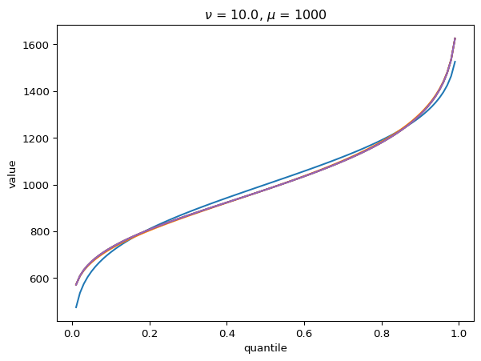
With \(\nu = 100\), there is a wide Poisson-dominated regime the convergence to Gaussian is quite fast.
order = 4
nu = 100.0
for mu in [1, 10, 100, 1000]:
cgf = cgf_y_series(mu, nu)
cumulants = [cumulant_from_cgf(cgf, k) for k in [1, 2, 3, 4]]
for o in range(2, order + 1):
cf = cornish_fisher(*cumulants[:o])
plt.plot(p, cf(x), label=o)
plt.xlabel("quantile")
plt.ylabel("value")
plt.title(r"$\nu$" f" = {nu}, " r"$\mu$ = " f"{mu}")
plt.show()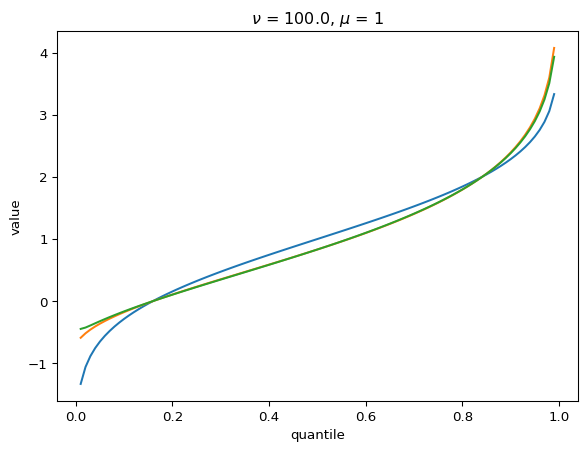
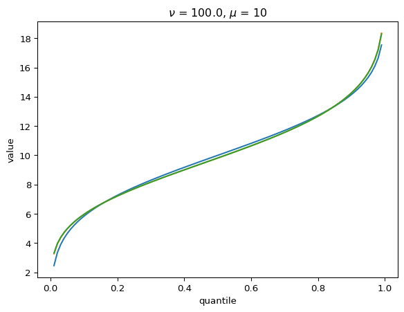
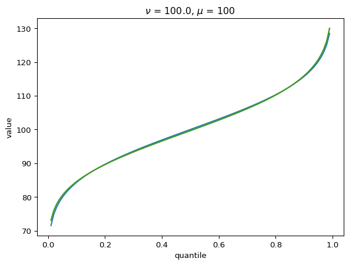
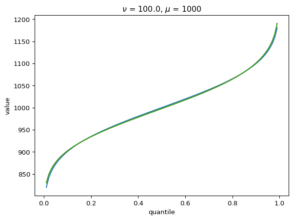
Percentiles
The following show the mean (dashed grey lines) and the 10th percentile (black) of cumulative counts as a function of the mean \(\mu\). Colored lines are the latent and poisson regime approximations. Each plot has a different shape parameter \(\nu\).
order = 4
ks = range(1, order + 1)
# 10th percentile
p = 0.1
x = norm.ppf(p)
mus = np.arange(1, 100)
for nu in [4, 10, 100]:
cgfs = [cgf_y_series(mu, nu) for mu in mus]
cumulants = [[cumulant_from_cgf(cgf, k) for k in ks] for cgf in cgfs]
cumulants_latent = [
[factorial(k - 1) / k * nu * (mu / nu) ** k for k in ks] for mu in mus
]
cumulants_poisson = [[mu for _ in ks] for mu in mus]
cf = [cornish_fisher(*cs)(x) for cs in cumulants]
cf_l = [cornish_fisher(*cs)(x) for cs in cumulants_latent]
cf_p = [cornish_fisher(*cs)(x) for cs in cumulants_poisson]
plt.plot(mus, cf, "k", label="full")
plt.plot(mus, cf_l, color="C0", label="latent")
plt.plot(mus, cf_p, color="C1", label="poisson")
plt.plot(mus, mus, "--", color="grey", label="mean")
plt.xlabel(r"$\mu$")
plt.ylabel("Cumulative counts")
plt.title(r"$\nu = $" f"{nu}")
plt.legend()
plt.show()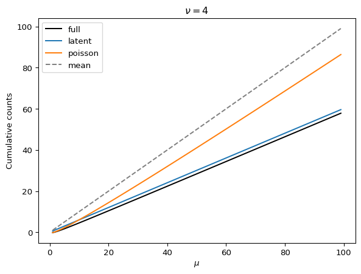
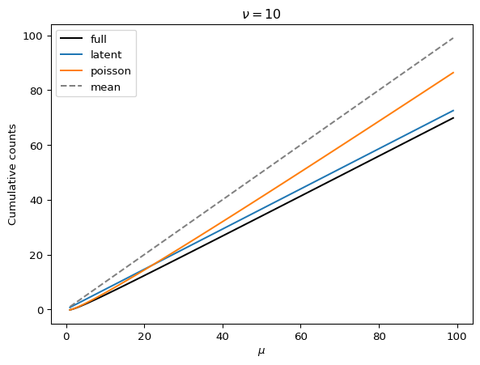
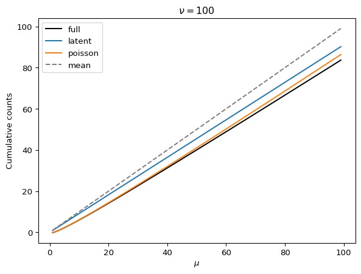
Observations:
- Smaller \(\nu\) means that we have a greater reduction of the 10th percentile from the mean.
- Smaller \(\nu\) means that the 10th percentile increase linearly (as expected in the latent regime).
- As \(\nu\) gets larger, there is a wider Poisson-dominated regime where the tenth percentile increases like \(\mu + \mu^{1/2} const.\).
- Unless \(\nu\) is very large, we can probably get away with the latent-regime approximation
Implications for cost
In the Poisson-dominated regime, a Gaussian approximation is pretty good, so \[ y(p) \approx \mu + \mu^{1/2} \Phi^{-1}(p) \] Note that this is true even when the detection threshold \(\hat{K} = 1\) because the mean will have to be larger than one to have a high probability of detection. We can let \(p\) be one minus the target probability of detection, set \(y(p) = \hat{K}\), and solve for \(\mu\). This allows us to calculate the delay in detection due to having to wait for the mean to be larger than the threshold.
The Poisson regime will be more appropriate for small read counts and thus small thresholds. Let’s consider the effect of stochasticity on detection when the threshold \(\hat{K}\) is low. If we detect when we observe two reads, the previous equation shows that we will need \(\mu \geq 4.8\) to detect 10% of the time. In contrast, our deterministic model predicts that we detect when \(\mu = 2\). Thus, the Poisson noise costs us over a full doubling time in detection sensitivity.
from scipy.optimize import fsolve
def mu_at_detection(k_hat, p):
def f(mu):
return mu + norm.ppf(p) * mu ** (1 / 2) - k_hat
return fsolve(f, k_hat)[0]
print(mu_at_detection(2.0, 0.1))
k_hat = np.arange(1, 20)
mu_10 = np.array([mu_at_detection(k, 0.1) for k in k_hat])
mu_05 = np.array([mu_at_detection(k, 0.05) for k in k_hat])
plt.plot(k_hat, mu_10, ".", label="Pr{detect}=0.1")
plt.plot(k_hat, mu_05, ".", label="Pr{detect}=0.05")
plt.plot(k_hat, k_hat, "--k", label="deterministic")
plt.title("Poisson approximation")
plt.legend()
plt.ylabel(r"$\mu$ at detection")
plt.xlabel(r"Detection threshold $\hat{K}$")
plt.show()
plt.plot(k_hat, mu_10 / k_hat)
plt.plot(k_hat, mu_05 / k_hat)
plt.ylabel("Inflation factor relative to deterministic")
plt.xlabel(r"Detection threshold $\hat{K}$")
plt.ylim([1, 4.5])4.810935246946805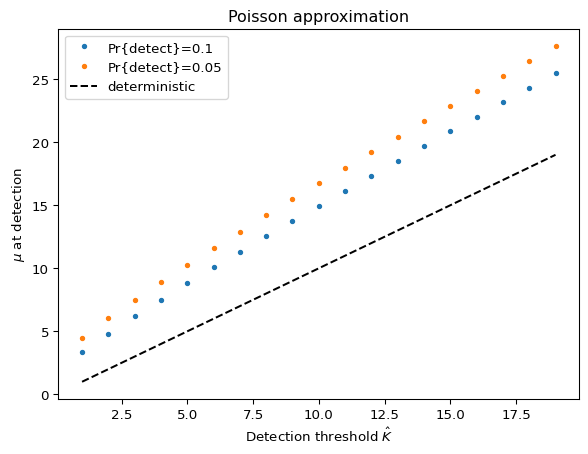
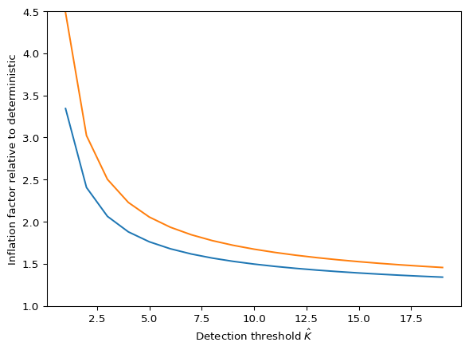
In the Latent-dominated regime, the terms of the Cornish-Fisher expansion just depend on \(\nu\), not on \(\mu\), so: \[ \begin{align} y(p) & \approx \mu + \frac{\mu}{{(2\nu)}^{1/2}} w_p(\nu) \\ & = \mu \left(1 +\frac{1}{{(2\nu)}^{1/2}} w_p(\nu)\right) \\ \end{align} \] Can calculate \(w_p(\nu)\) to as high order as we need, then solve for \(\mu\) as in the Poisson regime. Because \(w_p\) will be negative (since \(p\) is small), this will inflate the required \(\mu\) for detection by a factor. This suggests a path for data analysis: if we can estimate \(\nu\) from data (by estimating the overdispersion parameter \(\phi\) in the read count distribution and then scaling by \(r \delta t\), we can estimate the inflation factor.
def cf_latent(nu):
return HermiteE((1, (2 * nu) ** (-1 / 2), (2 / 9) / nu))
nu = np.arange(1.0, 20.0)
factor_10 = np.array([cf_latent(n)(norm.ppf(0.1)) for n in nu])
factor_05 = np.array([cf_latent(n)(norm.ppf(0.05)) for n in nu])
plt.plot(nu, 1 / factor_10, label="Pr{detect}=0.1")
plt.plot(nu, 1 / factor_05, label="Pr{detect}=0.05")
plt.legend()
plt.ylabel("Inflation factor relative to deterministic")
plt.xlabel(r"Shape parameter $\nu$")
plt.ylim([1, 4.5])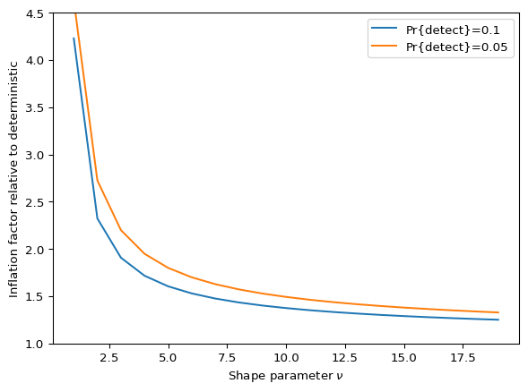
This suggests that the deterministic approximation will be within a doubling when \(\nu \gtrapprox 5\). However, it is never very close.
Putting these results together suggests that regardless of the regime, we expect the sequencing depth required to achieve detection probability of 0.9 or 0.95 at the target cumulative incidence to be roughly 1.5 to 3.0 times higher under a stochastic model than under the deterministic approximation.
The above assumes that \(\nu > 1.5\) or so. For smaller \(\nu\), our approximations break down. However, smaller \(\nu\) means more variability. Under those circumstances, the details of the distribution of sequencing outcomes likely matter in some detail.
Appendix: Small pool noise
So far we have assumed that our reads come from a homogenized sample of a large population as in wastewater. However, there is another potential source of noise when our sequenced sample comes from a small number of people such pooled samples from tens of nasal swabs. Depending on the sample collection details, aggregated airplane waste may also fit into this category. In this case, we must account for noise from the random number of infected individual contributing to the sample. We expect this noise to decrease as the size of the pool grows.
As above, let the number of viral reads in sample \(i\) be \(Y_i \sim Poisson(X_i)\) with \(X_i\) random. If we sample a pool of \(n_p\) individuals, each with an independent probability \(p_i\) of being infected, and each infected person expected to contribute \(a\) viral reads to our sample, we have
\[\begin{align} K_{X_i}(z) & = n_p \log \left(1 + p_i (e^{a z} - 1) \right) \\ & \approx n_p p_i (e^{a z} - 1) \\ K_{Y_i}(z) & \approx n_p p_i \left[\exp \left(a (e^z - 1)\right) - 1 \right] \end{align}\]
where the approximation is equivalent to a Poisson approximation to the number of sick people in the pool. Summing over samples and noting that \(\mu_i = a n_p p_i\), gives:
\[\begin{align} K_Y(z) & = \sum_i K_{Y_i}(z) \\ & = \mu \left[ \frac{\exp \left(a \left(e^z - 1\right)\right) - 1}{a} \right] \end{align}\]
Examining this, we see that the shape of the distribution is controlled by \(a\), the average number of reads each sick person contributes to the sample:
- When \(a \ll 1\), \(K_Y(z) \approx \mu \left(e^z - 1\right)\), i.e. the Poisson read count count noise dominates, as expected.
- When \(a \gg 1\), \(K_Y(z) \approx \frac{\mu}{a} \left(e^{az} - 1\right)\), i.e. the noise in the number of sick people in the pool dominates. (This is a scaled poisson random variable).
We have already examined case 1. In case 2, the probability of detection is going to be determined by the probability of getting \(\lceil \hat{K} / a \rceil\) sick individuals in our pool. When \(a > \hat{K}\), any sick individual in the pool will probably contribute enough reads for detection.
To see the effect of a small pool, consider the the special case that we detect upon seeing one read (\(\hat{K} = 1\)). (I believe that the conclusions here generalize to other , but it’s harder to show analytically.) In that case, detection happens as soon as \(Y > 0\):
\[\begin{align} Pr\{Y \geq \hat{K}\} & = 1 - Pr\{Y = 0\} \\ & = 1 - \exp \left[ \lim_{z \to - \infty} K_Y(z) \right] \\ & = 1 - \exp \left[ -\frac{\mu}{a} (1 - e^{-a}) \right] \end{align}\]
Say we want to detect with probability \(1 - p_{miss}\) by the time the cumulative incidence reaches our target. We’ll reach this detection probability when
\[ \mu = \left( \frac{a}{1 - e^{-a}} \right) (- \log p_{miss}). \]
a = np.arange(0.1, 10, 0.1)
plt.plot(a, a / (1 - np.exp(-a)))
plt.xlabel(r"Viral reads per sick individual in pool, $a$")
plt.ylabel(r"Inflation of $\mu$ at detection")
plt.ylim([0, 10])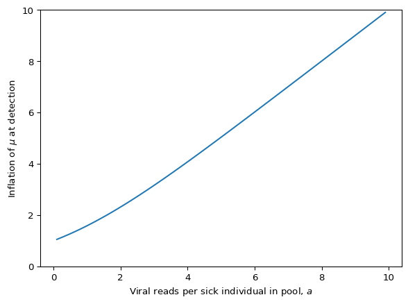
This shows that, all else equal, we prefer a larger pool to improve our consistency of detection.